Estrutura e conceitos do Sistema Brasileiro de Classificação de Solos
Classificação taxonômica do solo
Instituto Federal do Paraná
Curso Superior em Engenharia Agronômica
23 de novembro de 2026
Classificação taxonômica do solo
Classificação taxonômica do solo
- Atributos diagnósticos;
- Horizontes diagnósticos;
- Ordens de solos.
Material de consulta
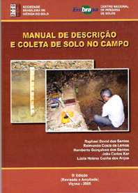
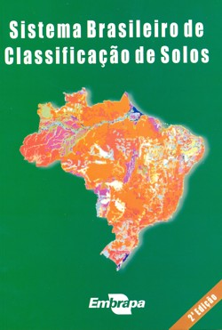
Conceitos de classificação
O que é classificar?
Classificação
Recurso utilizado para estudo pormenorizado de um objeto: seres vivos, compostos químicos, solos.
Objetivos da classificação
- Organização dos conhecimentos sobre um objeto ou tema;
- Estabelecimento de uma linguagem básica para a comunicação;
- Síntese e compreensão sobre semelhanças e diferenças entre indivíduos de uma população;
- Memorização das características de cada classe;
- Possibilidade de execução de estudos detalhados sobre uma ou mais classes.
População
Conjunto de indivíduos, de tamanho variável, de grande heterogeneidade em relação a uma série de características ou atributos.
O agrupamento de indivíduos semelhantes, em relação a determinadas características, consiste na formação de classes.
Classificação e características diferenciais
Classificação: inclusão de cada indivíduo em uma das classes formadas.
Características diferenciais (diagnósticas): são os critérios utilizados para a diferenciação entre os indivíduos de uma população.
Qual a característica diferencial utilizada: cor, forma ou tamanho?
quadriláteros · círculos · triângulos
Níveis categóricos
Nosso caso: objeto “solos”
- Nível 1: solos argilosos;
- Nível 2: solos argilosos vermelhos;
- Nível 3: solos argilosos vermelhos distróficos.
Níveis categóricos inferiores: maior número de informações, maior homogeneidade e maior número de classes.
Tipos de classificação
A classificação é uma concepção da mente humana, com critérios arbitrários definidos em função de objetivos diferenciados.
- Classificações naturais ou taxonômicas;
- Classificações técnicas ou interpretativas.
Classificações naturais ou taxonômicas
Utilizam ampla gama de características diferenciais.
Objetivos:
- Identificação de indivíduos e generalização de comportamento;
- Organização do conhecimento;
- Uniformização de terminologia;
- Possibilidade de extrapolação de resultados de pesquisa e experimentação (transferência de tecnologia).
Exemplos: SiBCS; Soil Taxonomy (EUA); Soil Map of the World (FAO).
Classificações técnicas ou interpretativas
Seleção de características diferenciais específicas.
Objetivos:
- Definição do comportamento do solo;
- Definição do potencial e das limitações para um determinado uso do solo.
Exemplos: Classificação da Capacidade de Uso das Terras; Sistema de Avaliação da Aptidão Agrícola das Terras; Sistema de Avaliação de Terras para Irrigação.
Sistema Brasileiro de Classificação de Solos
Histórico do SiBCS (1/3)
- Década de 50: utilização de classificação com base no antigo Sistema Americano;
- Década de 60: adaptação da definição dos horizontes diagnósticos, com base nos solos do Levantamento Pedológico do Estado de São Paulo;
- Décadas de 60 a 80: estabelecimento de classes em primeiro e segundo níveis, com base em solos levantados e descritos em diversas regiões do país;
- 1978: primeira reunião de correlação, classificação e aplicação em levantamentos de solos (RCC, RJ).
Histórico do SiBCS (2/3)
- 1980: 1ª aproximação: estrutura, atributos, horizontes, classes;
- 1981: 2ª aproximação: inclui a definição do primeiro nível categórico;
- 1982: II RCC (RJ, SP, MG);
- 1985: III RCC (RJ, SP, MG, PR);
- 1987: Boletim sobre a classificação de solos usada em levantamentos no Brasil (Camargo, Klamt & Kaufman);
- 1988: 3ª aproximação: definição das classes;
- 1994: IV RCC (RJ, ES, BA);
- 1995: projeto EMBRAPA-CNPS: desenvolvimento do SiBCS em três instâncias (grupos locais, regionais e nacional).
Histórico do SiBCS (3/3)
- 1997: 4ª aproximação;
- 1998: V RCC (PE, PB, RN, CE, BA);
- 1999: lançamento do SiBCS, 1ª edição;
- 2000: VI RCC (sul do país);
- 2003: XXIX CBCS: propostas de alterações no sistema;
- 2005: XXX CBCS: propostas de atualização (alterações em ordens e subordens; maiores alterações em grandes grupos e subgrupos) e VII RCC (MG);
- 2006: 2ª edição;
- 2013: 3ª edição.
- 2014: 4ª edição (E-book).
- 2018: 5ª edição.
- 2025: 6ª edição (publicação digital).
Descrição de perfil do solo
Exemplo: descrição geral
- Projeto/Perfil: BR158 P1;
- Data: 25/10/2006;
- Classificação: Latossolo Amarelo Ácrico típico (LAw);
- Localização: 337588 / 9914948;
- Situação e declive: topo, 4%;
- Altitude: 84 metros;
- Formação geológica: Formação Barreiras;
- Material de origem: produtos da decomposição de arenito grosseiro.
- Relevo local: suave ondulado;
- Relevo regional: plano a suave ondulado;
- Erosão: laminar ligeira;
- Drenagem: fortemente drenado;
- Vegetação: floresta ombrófila densa;
- Pedregosidade e rochosidade: não pedregosa e não rochosa;
- Uso atual: floresta;
- Descrito e coletado por: Emil Cioran.
Exemplo: descrição morfológica
A (0-35 cm): bruno (10 YR 4/3, úmido); franco arenosa; muito fraca pequena granular e grãos simples; macio, muito friável, ligeiramente plástica e ligeiramente pegajosa; transição gradual e plana.
Bw1 (35-61 cm): bruno-amarelado (10 YR 5/5, úmido); franco arenosa; maciça porosa que se desfaz em fraca pequena granular e grãos simples; ligeiramente dura, muito friável, ligeiramente plástica e ligeiramente pegajosa; transição difusa e plana.
Bw2 (61-91 cm): bruno-amarelado (10 YR 5/7, úmido); franco argilo arenosa; maciça porosa que se desfaz em fraca pequena granular e média blocos subangulares; ligeiramente dura, muito friável, ligeiramente plástica e ligeiramente pegajosa; transição difusa e plana.
Bt (91-135 cm+): bruno-amarelado a amarelo-brunado (10 YR 5,5/8, úmido); franco argilo arenosa a argilo arenosa; moderada média blocos subangulares; cerosidade moderada; ligeiramente dura, muito friável, ligeiramente plástica e ligeiramente pegajosa; transição difusa e plana.
Raízes: muitas no A e Bw1, comuns no Bw2 e poucas no Bt.
Exemplo: análises químicas e físicas
| Hz. | Prof. (cm) | Calhau | Cascalho | Terra fina | Areia grossa | Areia fina | Silte | Argila | Argila natural | GF | Silte/Argila | Corg | N | C/N |
|---|---|---|---|---|---|---|---|---|---|---|---|---|---|---|
| % | % | % | % | % | % | % | % | % | % | % | ||||
| A | 0-35 | 0 | 2 | 98 | 61 | 16 | 7 | 16 | 5 | 69 | 0,44 | 0,97 | 0,06 | 16 |
| Bw1 | -61 | 0 | 3 | 97 | 66 | 15 | 5 | 14 | 6 | 45 | 0,45 | 0,66 | 0,04 | 16 |
| Bw2 | -91 | 0 | 7 | 93 | 60 | 14 | 5 | 21 | 8 | 62 | 0,24 | 0,33 | 0,02 | 16 |
| Bt | -135+ | 0 | 5 | 95 | 53 | 16 | 4 | 27 | 0 | 100 | 0,15 | 0,20 | 0,02 | 10 |
| Hz. | Prof. (cm) | pH H2O | pH KCl | Al | Ca | Mg | Na | K | H | H+Al | P (mg g-1) | S | T | V (%) | m (%) |
|---|---|---|---|---|---|---|---|---|---|---|---|---|---|---|---|
| A | 0-35 | 4,0 | 4,1 | 1,0 | 0,1 | 0,1 | 0,01 | 0,03 | 3,0 | 4,0 | 2,8 | 0,2 | 4,2 | 5 | 83 |
| Bw1 | -61 | 4,4 | 4,3 | 1,1 | 0,1 | 0,1 | 0,01 | 0,01 | 3,2 | 4,3 | 1,5 | 0,2 | 4,5 | 4 | 85 |
| Bw2 | -91 | 4,4 | 4,3 | 0,7 | 0,1 | 0,1 | 0,01 | 0,01 | 3,6 | 4,3 | 0,8 | 0,2 | 4,5 | 4 | 78 |
| Bt | -135+ | 4,4 | 4,3 | 0,6 | 0,1 | 0,1 | 0,01 | 0,00 | 0,2 | 0,8 | 0,7 | 0,2 | 1,0 | 20 | 75 |
Al, Ca, Mg, Na, K, H, H+Al, S e T em cmolc kg-1.
Ordens de solos
Níveis categóricos do SiBCS
| Nível | Categoria | Critério |
|---|---|---|
| 1º | Ordens | Presença ou ausência de atributos, horizontes ou propriedades identificadas no campo; atuação de processos na formação do solo. |
| 2º | Subordens | Atuação de outros processos que agem junto com os processos dominantes; envolve propriedades relacionadas ao desenvolvimento das plantas. |
| 3º | Grandes grupos | Tipo e arranjamento de horizontes; atividade da argila; saturação por bases, Al ou Na; presença de propriedades que restringem o desenvolvimento das plantas. |
| 4º | Subgrupos | Típico; intermediário para o 1º, 2º ou 3º nível; características extraordinárias. |
| 5º | Famílias | Não aparecem no SiBCS. |
| 6º | Séries | Não aparecem no SiBCS. |
1º nível categórico: Ordens
Presença ou ausência de atributos, horizontes ou propriedades identificadas no campo. Atuação de processos na formação do solo.
- Organossolos
- Neossolos
- Vertissolos
- Espodossolos
- Planossolos
- Gleissolos
- Latossolos
- Chernossolos
- Cambissolos
- Plintossolos
- Luvissolos
- Nitossolos
- Argissolos
Ordens
As 13 ordens de solos
Organossolos
Origem: grego organikós, pertinente ou próprio dos compostos de carbono. Conotativo de solos de constituição orgânica, em ambientes de grande umidade.
No SiBCS: solos constituídos por material orgânico (C-org ≥ 80 g kg-1 de TFSA), que apresentam horizonte hístico.
Diagnóstico: presença de horizonte H ou O.
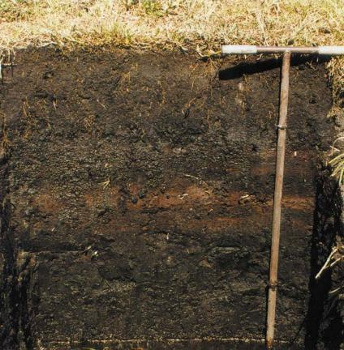
Organossolos
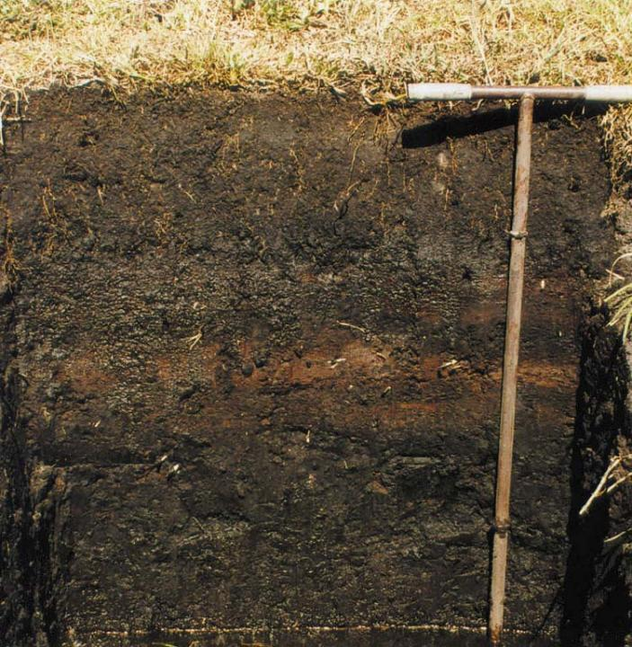
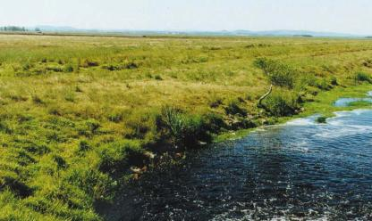
Atenção a: presença de materiais sulfídricos; densidade do solo.
Organossolos
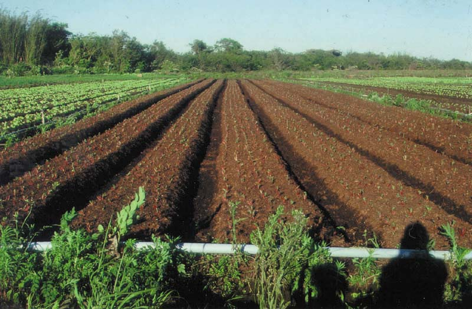
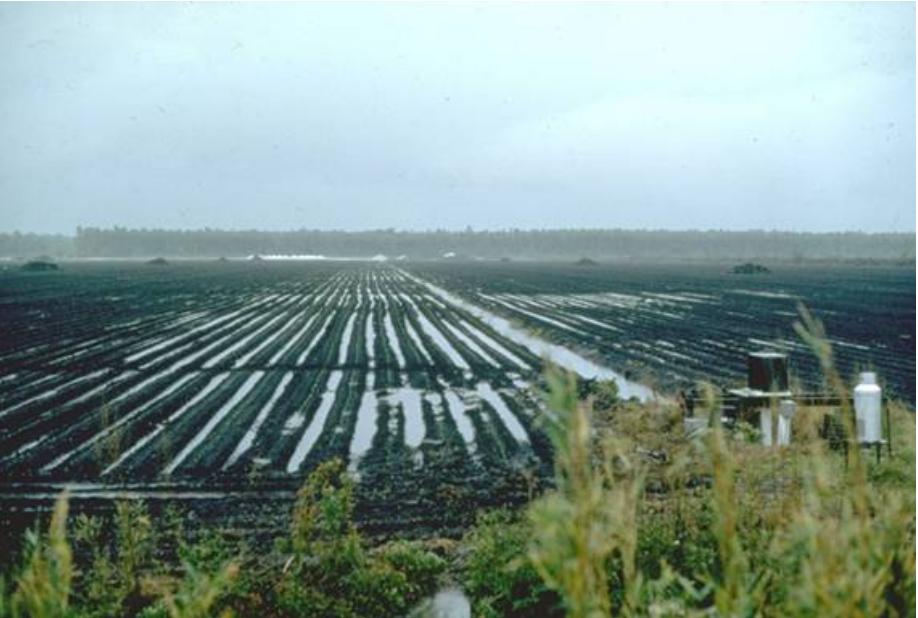
Neossolos
Origem: grego néos, novo, moderno. Conotativo de solos jovens, em início de formação, com pequeno desenvolvimento.
No SiBCS: solos pouco evoluídos.
Diagnóstico: sem presença de horizonte subsuperficial.
Neossolos
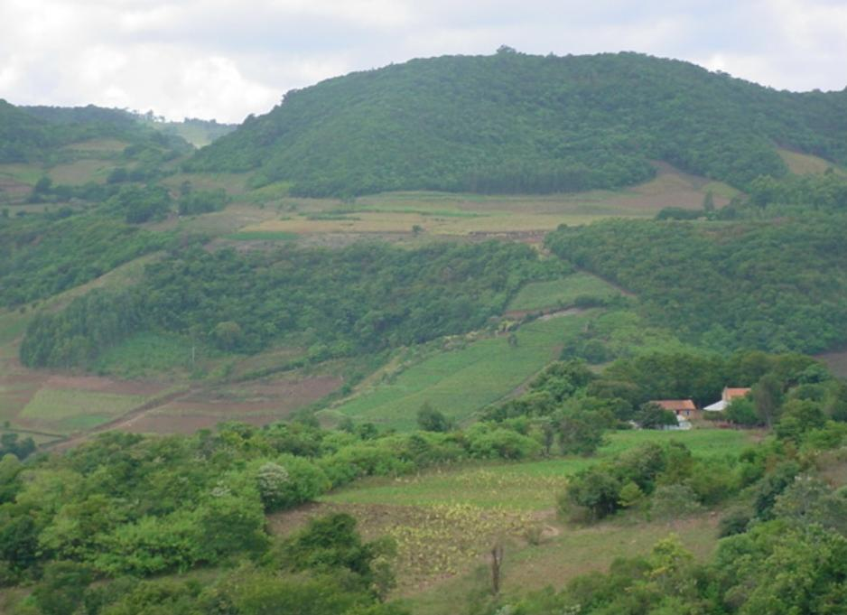
Neossolo Litólico Eutrófico chernossólico
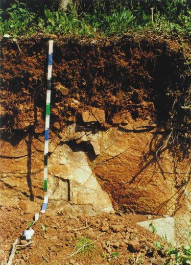
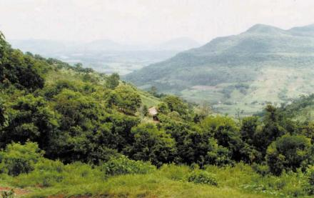
Neossolo Litólico Distrófico típico
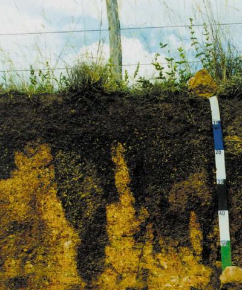
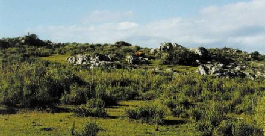
Neossolo Quartzarênico Órtico típico
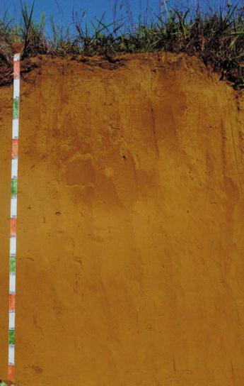
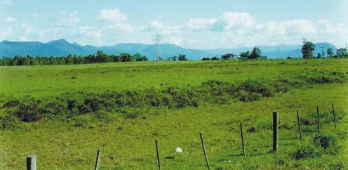
Neossolos
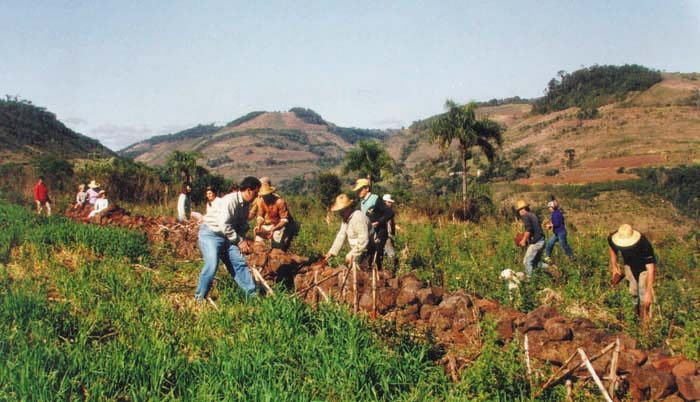
Vertissolos
Origem: latim vertere. Conotativo de movimento na superfície do solo (expansão/contração).
No SiBCS: solos constituídos por material mineral com horizonte vértico entre 25 e 100 cm de profundidade e relação textural insuficiente para caracterizar um B textural.
Diagnóstico: presença de minerais 2:1 expansíveis.
Vertissolo Ebânico Órtico chernossólico
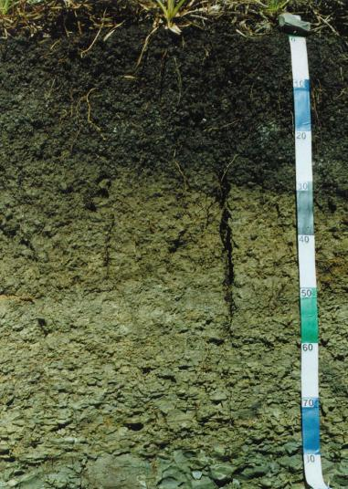
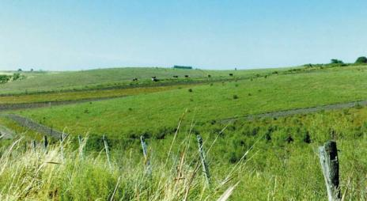
Vertissolos: manejo
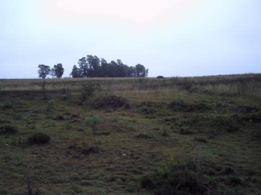
- Condições químicas;
- Manejo do solo.
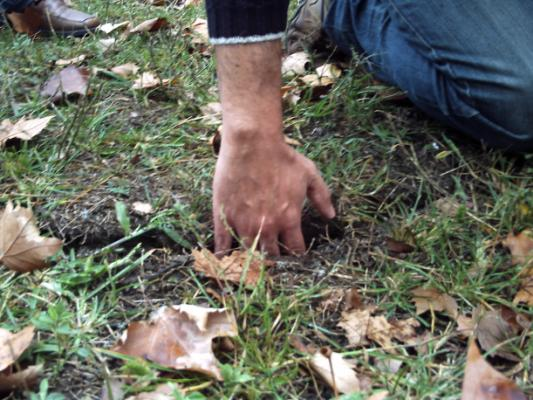
- Condições físicas;
- Erosão do solo.
Espodossolos
Origem: grego spodos, cinza vegetal. Solos com horizonte de acumulação de materiais orgânicos e outros.
No SiBCS: solos constituídos por material mineral, com horizonte B espódico imediatamente abaixo de horizonte E ou A, dentro de 200 cm da superfície, ou de 400 cm de profundidade se a soma A+E ultrapassar 200 cm.
Diagnóstico: horizonte “escuro” em subsuperfície.
Espodossolos
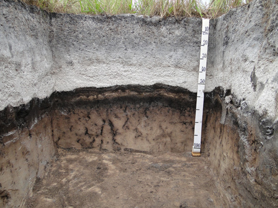
Planossolos
Origem: latim planus, plano, horizontal. Conotativo de solos desenvolvidos com encharcamento superficial estacional.
No SiBCS: solos constituídos por material mineral com horizonte A ou E seguido de horizonte B plânico.
Diagnóstico: transição abrupta de horizonte.
Planossolos
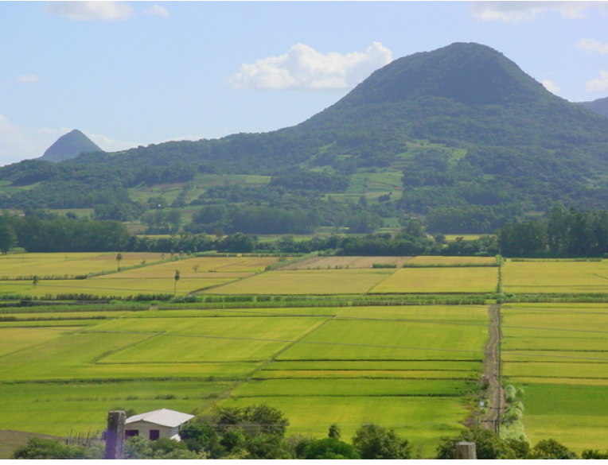
Planossolo Hidromórfico Eutrófico arênico
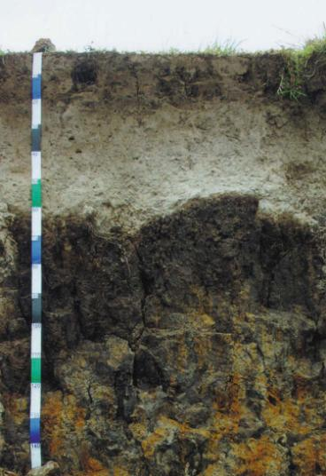
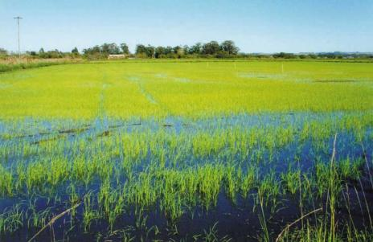
Planossolo Hidromórfico Eutrófico solódico
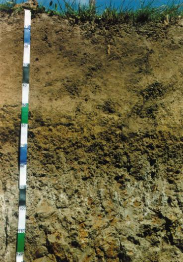
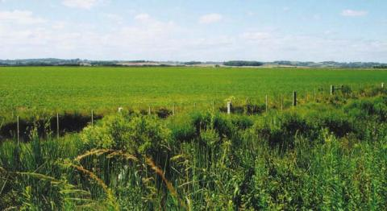
Gleissolos
Origem: russo gley, massa de solo pastosa. Conotativo de excesso de água.
No SiBCS: solos com horizonte glei imediatamente abaixo de um horizonte A.
Diagnóstico: sem transição abrupta entre horizontes.
Gleissolo Melânico Eutrófico típico
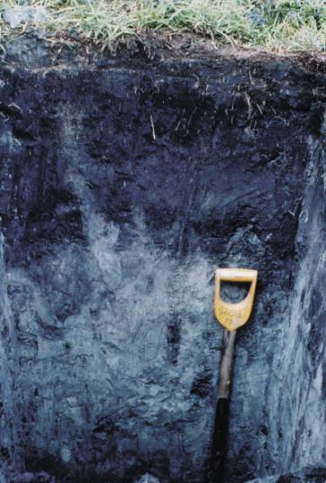
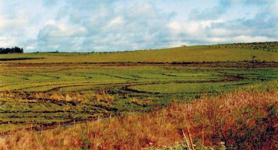
Latossolos
Origem: latim later, material altamente alterado (tijolo). Conotativo de elevado conteúdo de sesquióxidos.
No SiBCS: solos constituídos por material mineral, com horizonte B latossólico imediatamente abaixo de qualquer tipo de horizonte A, dentro de 200 cm da superfície ou de 300 cm se o horizonte A tiver mais de 150 cm de espessura.
Diagnóstico: solos profundos, avermelhados ou amarelados.
Latossolo Vermelho Aluminoférrico típico
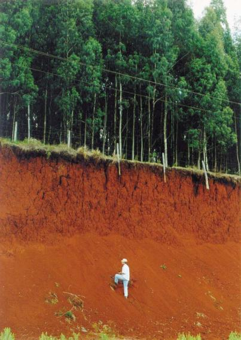
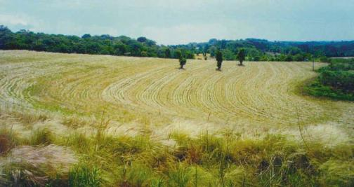
Latossolo Bruno Alumínico câmbico
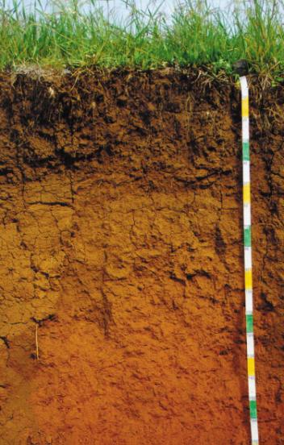
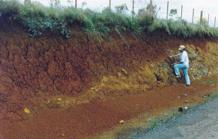
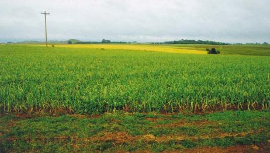
Latossolo Vermelho Distroférrico típico
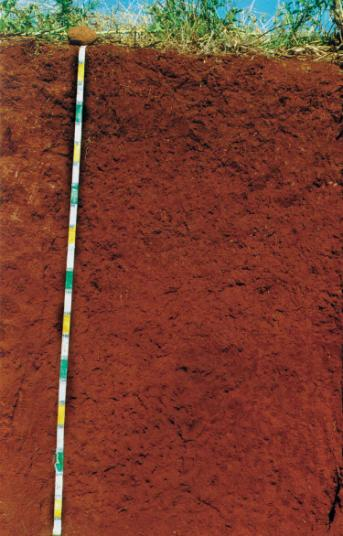
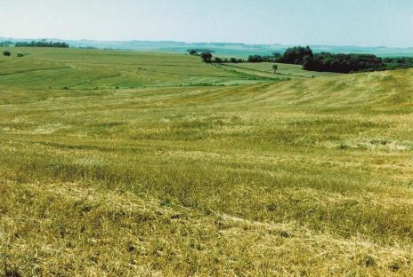
Latossolo Vermelho Distrófico típico
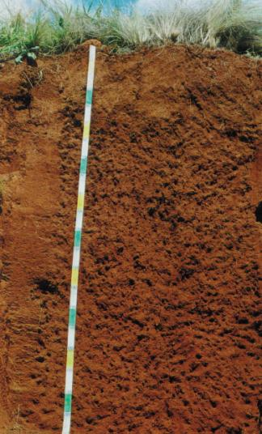
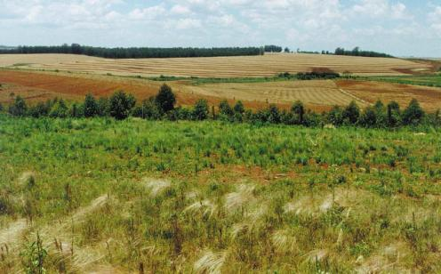
Latossolos
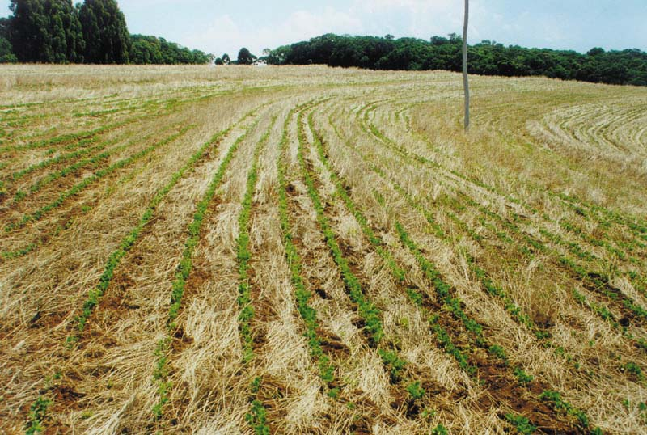
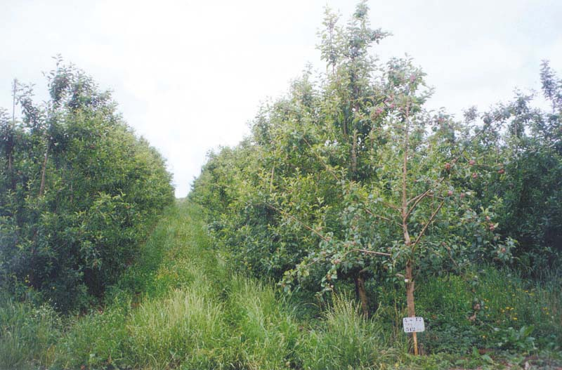
Chernossolos
Origem: russo chern, negro. Conotativo de solos ricos em matéria orgânica, de coloração escura (A chernozêmico): preto e rico em bases.
No SiBCS: solos constituídos por material mineral que apresentam horizonte A chernozêmico.
Diagnóstico: características químicas (alta saturação por bases).
Chernossolos
Alta saturação por bases e horizonte A chernozêmico.

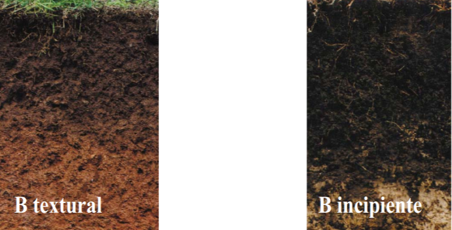
Chernossolo Ebânico Carbonático vértico
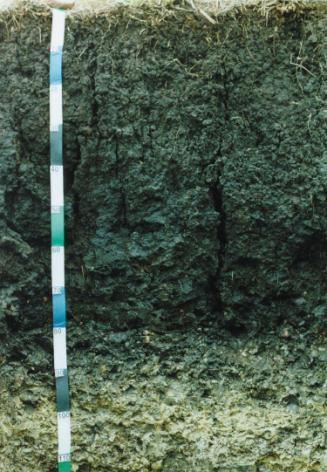
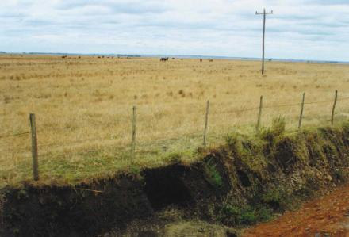
Chernossolo Argilúvico Férrico típico
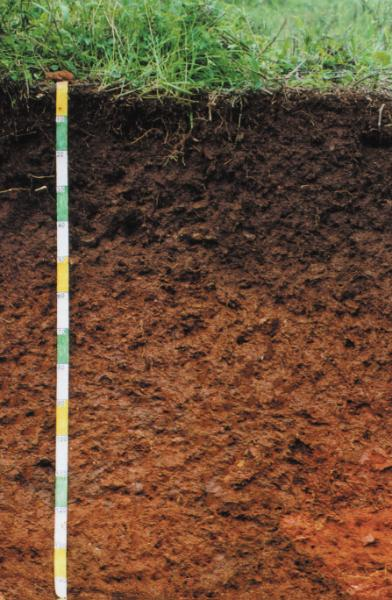
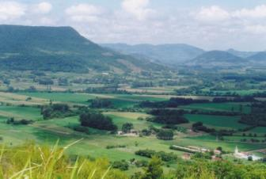
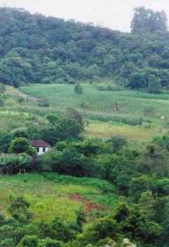
Cambissolos
Origem: latim cambiare, trocar. Conotativo de solos em formação (transformação).
No SiBCS: solos constituídos por material mineral com horizonte B incipiente subjacente a qualquer tipo de horizonte superficial, exceto hístico com 40 cm ou mais de espessura, ou horizonte A chernozêmico quando o B incipiente apresentar argila de atividade alta e saturação por bases alta.
Plintita e petroplintita, horizonte glei e horizonte vértico, se presentes, não satisfazem os requisitos para Plintossolos, Gleissolos e Vertissolos, respectivamente.
Cambissolo Húmico Alumínico típico
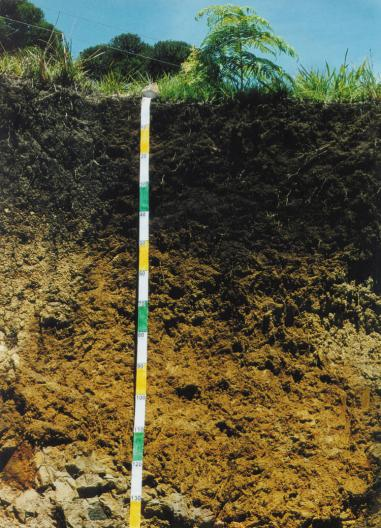
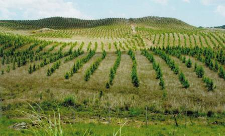
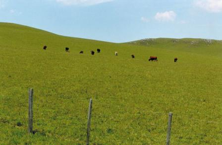
Cambissolo Háplico Tb Distrófico típico
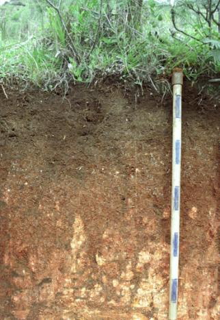
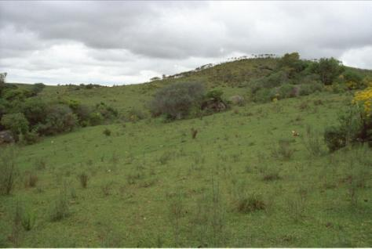
Cambissolo Háplico Ta Eutrófico típico
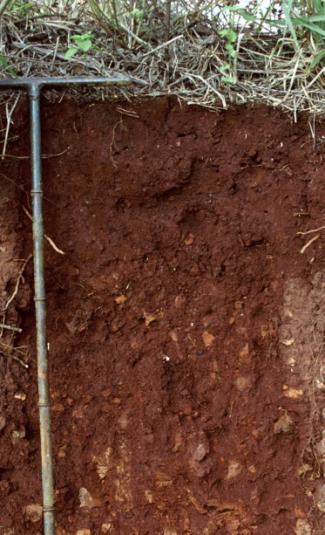
Plintossolos
Origem: grego plinthos, ladrilho. Conotativo de materiais argilosos, coloridos, que endurecem quando expostos.
No SiBCS: solos constituídos por material mineral, apresentando horizonte plíntico, litoplíntico ou concrecionário.
Diagnóstico: plintita ou petroplintita em volume suficiente ao requerido pelo sistema de classificação.
Plintossolo Argilúvico Eutrófico abrúptico
Luvissolos
Origem: latim luere, lavar. Conotativo de acumulação de argila; solo saturado, com argila de atividade alta (Ta).
No SiBCS: solos constituídos por material mineral, com argila de atividade alta, alta saturação por bases e horizonte B textural imediatamente abaixo de horizonte A fraco, moderado ou proeminente, ou horizonte E.
“É um Argissolo com alta saturação por bases e argila de atividade alta (Ta).”
Luvissolo Crômico Órtico típico
Nitossolos
Origem: latim nitidus, brilhante. Conotativo de superfícies brilhantes em unidades estruturais.
No SiBCS: solos com 350 g kg-1 ou mais de argila, constituídos por material mineral com horizonte B nítico imediatamente abaixo do horizonte A ou dentro dos primeiros 50 cm do horizonte B, com argila de atividade baixa ou caráter alítico na maior parte do B, dentro de 150 cm da superfície.
Diagnóstico: presença de cerosidade.
Nitossolo Vermelho Distroférrico latossólico
Argissolos
Origem: latim argilla, conotando solos com processo de acumulação de argila.
No SiBCS: solos constituídos por material mineral, com horizonte B textural imediatamente abaixo do A ou E, com argila de atividade baixa, ou com argila de atividade alta conjugada com saturação por bases baixa e/ou caráter alítico na maior parte do horizonte B.
Diagnóstico: presença de B textural.
Argissolo Vermelho Distrófico latossólico
Argissolo Vermelho-Amarelo Distrófico arênico
Argissolo Vermelho-Amarelo Distrófico típico
Argissolos
Classes de solo no Brasil
| Classes | Área absoluta (km2) | Área relativa (%) |
|---|---|---|
| Latossolos | 2.799.703 | 33,6 |
| Argissolos | 2.390.473 | 28,7 |
| Neossolos | 1.138.360 | 13,7 |
| Cambissolos | 437.262 | 5,2 |
| Plintossolos | 426.482 | 5,1 |
| Gleissolos | 369.119 | 4,4 |
| Luvissolos | 238.480 | 2,9 |
| Planossolos | 196.377 | 2,4 |
| Espodossolos | 144.686 | 1,7 |
| Nitossolos | 111.058 | 1,3 |
| Chernossolos | 27.473 | 0,3 |
| Vertissolos | 19.261 | 0,2 |
| Organossolos | 6.753 | 0,1 |
| Outros | 25.328 | 0,3 |
Fim!